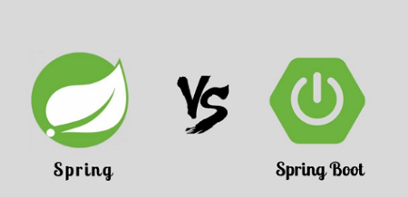
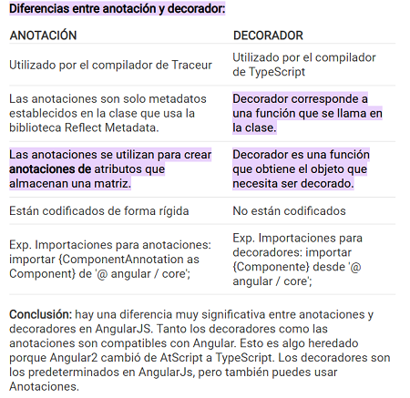
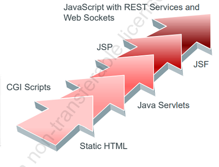

| Referencia | Descripcion | Ejemplo |
|---|---|---|
| Atajos de teclado |
Windows macOS Linux |
|
| creacion de paginas web: informacion | Desarrollo Web con Java EE | |
| framework FrontEnd |
hay tres Frameworks o librerias o marcos de trabajo (populares) en el frontEnd 1. Angular: google 2. React: facebook 3. Vue-Js: Por deiversas compañias . |
|
| Java Spring (Framework) Vs Java SpringBoot |
1ro. fue Spring(Framewok) y despues SpringBoot 2do.la confusión o duda, viene porque ambos nos permiten crear una aplicación Spring, pero siguiendo caminos un poco diferentes info1 info2 |
 |
| Contenedor de aplicaciones |
Java spring emplea como contenedor de aplicaciones o contenedor de servlet por defecto Tomcat Y Jetty O Undertow Docker y Kubernetes Para Despliege de Apps: Son plataformas para despliegue de aplicaciones de microservicios, Docker crea un container en el cual se puede ejecutar la aplicacion y kubernete toma el contenedor para desplegar la aplicacion con un escalamiento de forma horizontal informacion todama de go.ts |
|
| Principales Framewoks |
1. React.js [Frontend + JavaScript] NO ES UN FRAMEWORK info 2. SpringBoot [Backend + Java] 3. Angular [Frontend + JavaScript] 4. Node.js [Backend + JavaScript] 5. Django [Frontend + Backend + Python] 6. Frasco [Backend + Python] 7. Bootstrap [Frontend + CSS] 8. jQuery [Frontend + JavaScript] 9. Ruby on Rails [Backend + Ruby] 10. GraphQL [Backend + JavaScript] |
|
| Decoradores vs Anotaciones |
Existen principalmente tres tipos de anotaciones en java: * Anotación de marcador (sin ningún método), * Anotación de valor único (con un solo método). * Anotación de valores múltiples (con más de un método). La anotación @Target es una meta-anotación, es decir, solo se puede usar para anotar otras anotaciones. Toma la enumeración de ElementType como su único argumento. La enumeración ElementType es una constante que especifica el tipo de declaración del elemento del programa (clase, interfaz, constructor, etc.) a la que se puede aplicar la anotación. Si aplicamos la anotación @Target con algún tipo de elemento como anotación a un nombre de anotación personalizado CustomAnnotation Anotaciones: esta es una característica de lenguaje codificada. Las anotaciones son solo metadatos establecidos en la clase que se usa para reflejar la biblioteca de metadatos. Cuando el usuario anota una clase, el compilador crea un atributo en esa clase llamado anotaciones , almacena una matriz de anotaciones en ella, luego intenta instanciar un objeto con el mismo nombre que la anotación, pasando los metadatos al constructor. Decoradores : un decorador es una función que agrega metadatos a una clase, sus miembros o los argumentos de su método. Un decorador es solo una función que le da acceso al objetivo que debe decorarse. Hay cuatro tipos de decoradores, todos ellos se mencionan a continuación: Tipos de decoradores: 1. Decoradores de clases como @Component, @NgModule 2. Decoradores de propiedades como @Input y @Output 3. Decoradores de métodos como @HostListener 4. Decoradores de parámetros como @Injectable |
 |
| framework BackEnd con Java |
Frameworks o librerias o marcos de trabajo (Segun aparicion cronologica) en el BackEnd 1. html static 2. CGI scripts 3. Java Servlet 4. Java Server Page JSP 5. Java Server Faces JSF CGI (Common Gateway Interface) Interfaz de entrada Comun Es una tecnologia importante que permite al Cliente solicitar informacion al servidor Las aplicaciones CGI fueron una de las primeras prácticas de crear contenido dinámico para las páginas web. |
 |
| Consideraciones | Que es un servidor de aplicaciones en java | |